本文介绍了家庭门禁管理系统的一种设计方案，基于旷视云平台的人脸识别技术实现了一款智能门禁系统，使用Face++人脸识别进行实时人脸分析，不仅使用便利，而且保证了识别数据的有效性和准确性，系统分为硬件和软件两个部分，硬件以树莓派4B为控制核心，外接摄像头、步进电机、蜂鸣器、触摸开关等模块；软件部分基于旷视云平台，构建了在不同操作环境下信息管理与控制系统，通过应用场景模拟对系统进行试验，结果表明：该系统运行可靠，外接模块以及系统电路运行良好，识别准确率高，电机响应平均时间为0.5s，消息远程收发功能、信息管理与控制系统的相关功能均可正常执行。
绪论
课题背景
随着计算机网络技术的发展成熟，在给我们带来便捷的同时，也带来了运用高新技术手段进性偷盗、抢劫等违法犯罪问题，家庭安全问题越来越受到人们的重视，现代人工智能的安防领域也有了极大的突破和进展，出现了各种身份识别方法。其中最热门的、被关注最多的就是人脸识别，而人脸识别算法也从过去单一的模式识别到如今的多算法提取，从二维平面图像到多维建模生物识别。人脸识别技术凭借其自身的实用性及可靠性得到了广泛的认可，对采用人脸识别方式作为门禁管理系统的小区而言，不仅可以将社区管理提高一个档次、同时节省许多管理成本，而且能够有效地保障社区安全。此外近年来，基于Linux的单片机计算机也已逐渐发展成熟，并以其低价、自由的特点被广泛使用。因此本文将人脸识别与嵌入式、树莓派等相融合，设计出一套高安全级别的门禁管理系统。
设计任务与要求
（1）以家庭智能门禁系统为背景，通过调研、分析现有的门禁系统，建立系统模型；完成软硬件结构设计和数据库设计；
（2）系统要实现智能开关门、记录门禁信息、远程控制和人员管理等功能；
（3）系统要实现满足多种条件的统计分析功能，有些统计数据要采用图表的格式呈现；
（4）系统要具有安全性、准确性和高效率，能够改善传统安防领域的方便性、直观性；
系统设计需求分析
开发环境及开发平台
Windows10操作系统、Visual Studio Code编译器（Python 3.8）、FinalShell SSH工具、windows远程桌面连接；
Raspbian操作系统、Thonny 编译器（Python 3.6）；
系统的组成及工作原理
系统主要有两大部分组成：硬件部分和软件部分。硬件主要包括树莓派主控设备、触摸开关、图像采集设备、警报设备和步进电机模块。软件主要有基于Flask框架的web可视化界面。
当有人触摸开关时，触发人脸识别主函数进行实时拍照并将此照片发送至Face++云服务中心进行分析，云服务得出上传图像的人脸参数，并把参数跟已经预存在人脸数据库中的面部信息进行比对，将比对结果传回到树莓派．确认识别成功后控制步进电机转动，若人脸不匹配则触发警报，同时记录下本次的识别数据。
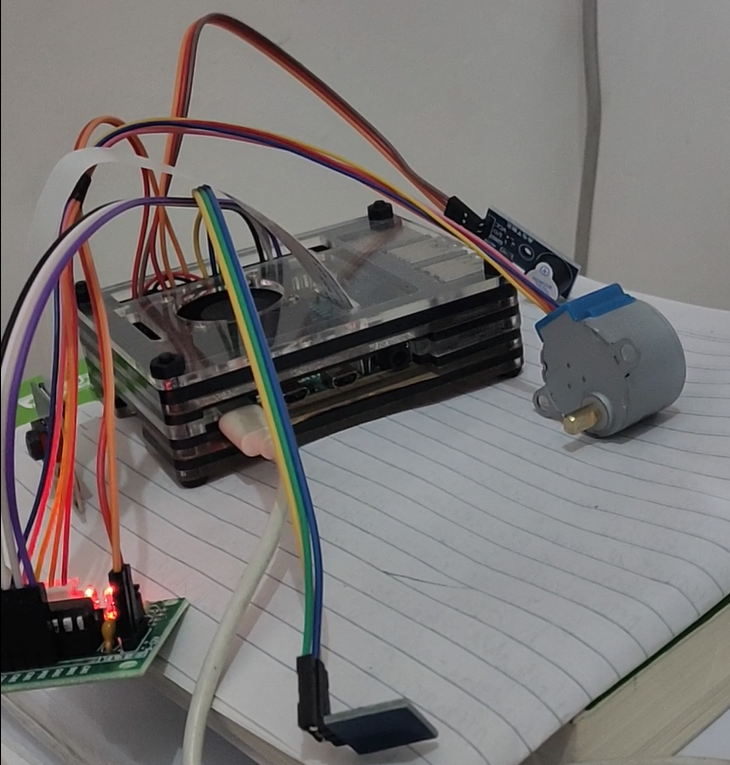
设计的重点与难点
本系统设计重点在于人脸检测分析及人脸比对、系统整体软硬件架构；
难点有硬件设备的安装与调试、前端网页的设计与代码编写，frp 可用于内网穿透的高性能的反向代理应用，使用frp实现内网穿透远程实时监控。Face++的人脸库数据操作有两种方式，一种直接在Face++云的控制中心上传，另一种是通过代码的方式进行操作．第一种方式虽然可以直接使用，但对于用户来说，整个操作过程还是较为繁琐．为方便对云平台人脸数据库进行管理，需要建立一个用户管理系统界面。
系统的总体设计
系统功能层次图
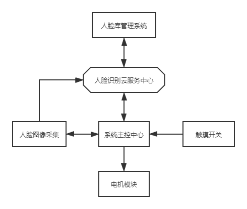
系统功能描述
基于树莓派的人脸识别门禁系统硬件主要包括树莓派主控设备、图像采集设备、触摸模块、步进电机模块和警报模块。本文的智能门禁系统设计具有半自动的特点，系统运行时树莓派会将采集到的面部图像发送至云端服务中心进行分析，云端服务中心得出上传图像的人脸参数，并把参数跟已经预存在人脸数据库中的面部信息进行比对，得到相似度结果，然后再将得到的数据从云端反馈回下位机主控设备。触摸传感器触发人脸识别主函数进行实时拍照并将此照片发送至云服务中心处理并将比对结果传回到树莓派。确认识别成功后控制步进电机转动，并将结果显示在树莓派终端，否则触发警报模块，同时记录下本次的识别数据。Web客户端可远程查看实时监控画面、人员管理（增加和删除人脸）、查看门禁记录和开关门操作等功能
系统的模块设计
界面（UI）设计
界面布局示意图
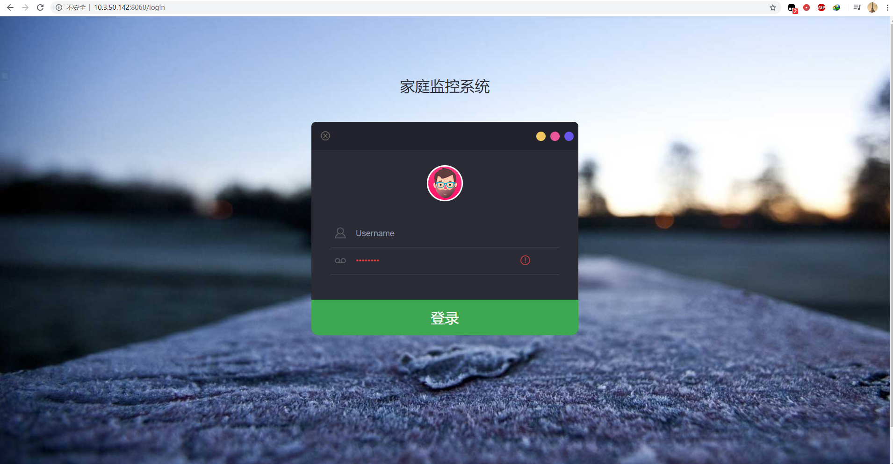
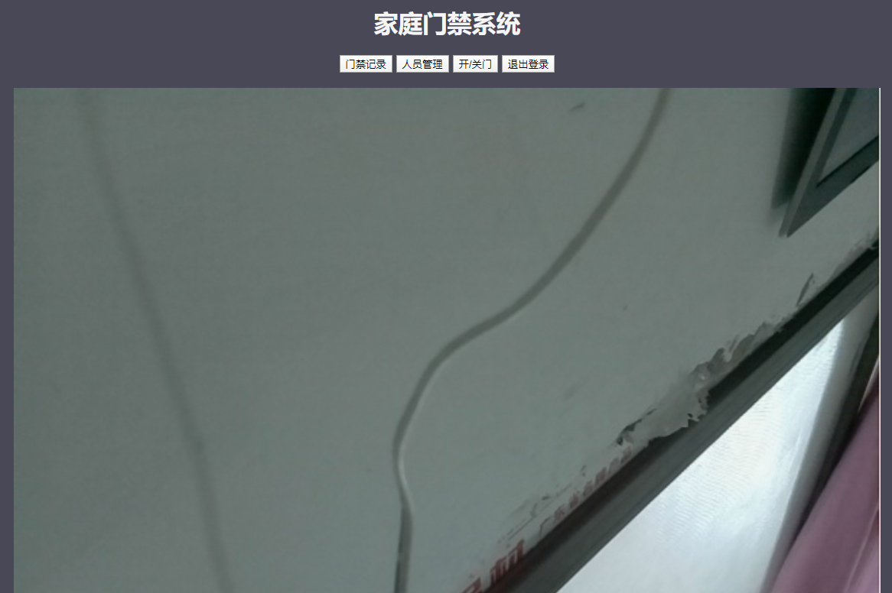
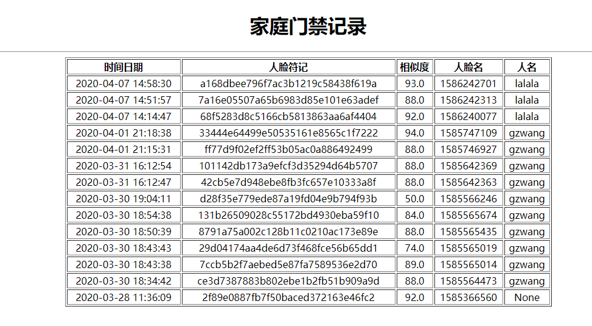
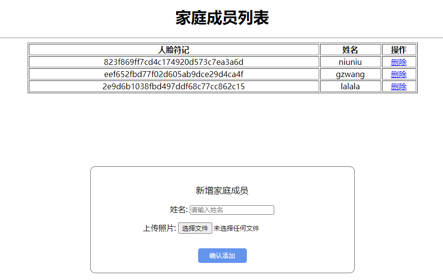
界面控件（或部件）设计
主要设计四个界面：登录界面、主界面、门禁记录界面和人员管理界面。
登录界面主要包括用户名及密码输入，登录按钮；
主界面有显示实时监控画面、退出登录按钮、开关门按钮、人员管理按钮和门禁记录按钮；
人员管理界面主要有家庭成员列表，增加或删除家庭人员等控件；
门禁记录界面显示刷门禁的时间日期、人脸相似度、人脸名和姓名；
数据库设计
E-R图
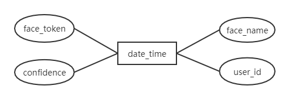
数据库表结构
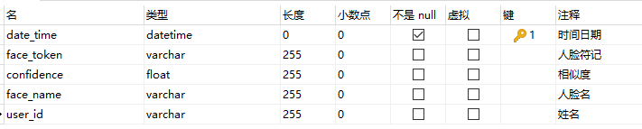
此系统的数据库设计比较简单，采用腾讯云的 MySQL 数据库，仅需要一个数据库表来记录门禁信息，门禁信息包括时间日期、人脸符记、相似度、人脸名和姓名，其中时间日期是主键。人脸信息的保存并不在此数据库中，Face++ 提供的 API 接口可直接增加和删除人脸，预存人脸也是在 Face++ 的云服务器上，极大的便利了人脸信息的存储，同时也更利于人脸搜索，减少系统响应时间。
主控模块设计
程序流程图
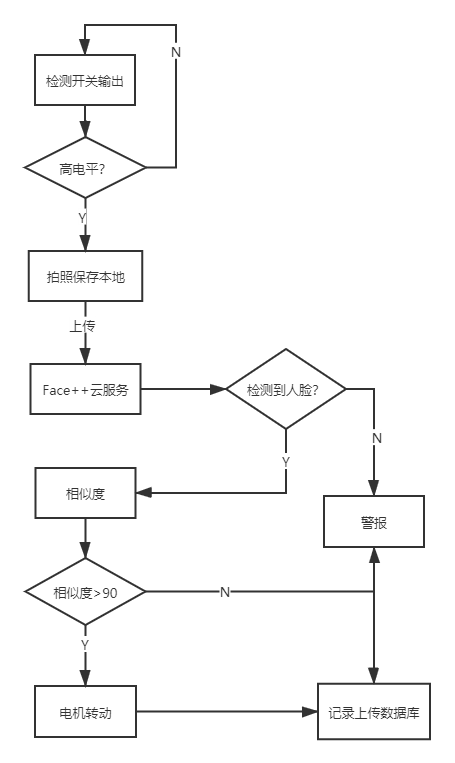
系统功能描述
循环检测触摸开关有无产生高电平，若有则拍照并保存本地，接着调用人脸检测程序将原始的图片以二进制形式上传至Face++云服务，待上传完成之后，若检测到人脸，接着调用人脸搜索API云服务会返回人脸的相似度[7]，主控模块将对返回的结果进行比对判断。如果对比成功，则驱动步进电机开始旋转，否则触发警报模块。最终识别记录信息会上传到腾讯云端数据库，方便获取和查看。
触发模块设计
触发模块是一个基于触摸检测 IC (TTP223B) 的电容式点动型触摸开关模块。默认状态输出低电平，模式为低功耗模式；当用手指触摸相应位置时，模块会输出高电平，再次触摸又恢复低电平。模式切换为快速模式；当持续12秒没有触摸时,模式又切换为低功耗模式。
程序流程图
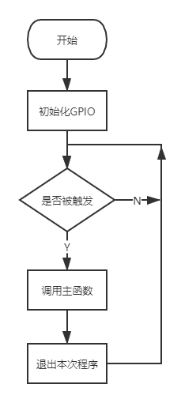
系统功能描述
为了将电平信号传递给主控模块，在每次调用触发模块之前，需要将代码中连接触摸开关 OUT 引脚的 GPIO 设置为 INPUT 模式。程序启动后触摸模块循环检测，当检测到手指触摸时输出高电平给树莓派，如果没有检测到触摸则循环检测直到程序退出。
拍照模块设计
本文采用树莓派专用 500W 像素摄像头(含 CSI 接口排线)作为拍照模块,该拍照模块由 OmniVision 公司生产(基于 0V5647 图像处理传感模块)为树莓派 4B 开发板生产的专用拍照模块，兼容性更加优良。
该拍照模块的核心元件是一个 500w 像素的 CMOS 传感器,支持最大分辨率为 2592X1944 的图片拍摄,同样支持每秒30帧的 1080p 视频拍摄(同时兼容每秒 60 帧的 720P 视频拍摄)。拍照模块与主控模块通过一条 15 芯的排线( CSI 接口)进行连接。具体连接过程如下：先将主控模块上 CSI 接口两端的卡扣拉起，然后将排线插入座中，最后垂直按下两端的卡扣。
该拍照模块内部提供三个应用程序,分别为：raspistill、raspivid、raspisillyuv，其中 raspivid 用来捕捉视频，raspistill 及 raspistillyuv 则用来捕捉图像。
应用程序使用了四个 OpenMAX（mmal）组件：camera (摄像)、preview(预览)、encoder (编码)、null_sink。 以上三个应用程序均使用摄像组件, raspivid 使用视频编码组件，raspistill 使用图像编码组件，由于 raspistillyuv 是直接将 YUV 或 RGB 从摄像组件输出到文件，所以不需要编码组件。使用 OpenMAX 的 mmal API 为所有程序进行编写且通过命令行的方式进行调用。本文的设计将通过调用 OpenCV 内部函数的方式进行拍照。
程序流程图
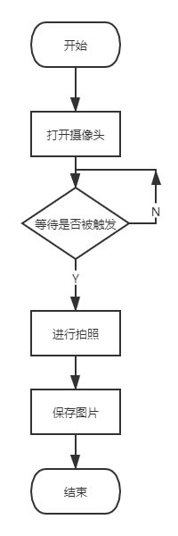
系统功能描述
初次进入系统将拍照模块功能设置为 enabled (打开)，以便程序调用。在本次的设计中，程序调用 OpenCV 进行拍照处理。当拍照模块的拍照服务启动时将采集的图片保存为 jpg 格式，然后等待下次调用。
驱动模块设计
主控模块的 GPIO 口驱动能力相对较弱，驱动电平仅为 3.3V,所以高电平驱动比低电平驱动能力稍弱些。当主控模块直接将输入信号传递给步进电机时，步进电机无法正常工作，所以在本次设计中需要添加一个驱动模块。驱动模块具有放大功率的作用,可以满足在输入信号比较微弱、输出功率比较高的情况下工作。
步进电机对输入电流需求较高，主控模块的供电能力有限，同时考虑到硬件设计的兼容性，以往的设计常常采用专用接口及驱动电路的方式来解决。驱动电路部分可以采用功率比较高的复合管，例如常见的 ULN2003、L298N 等。驱动模块的工作状态是由主控模块提供的控制信号决定的。在本文驱动模块的电路设计时需要满足以下的要求：
(1)驱动电路提供的电流波形尽可能的接近矩形波，需要电流的快速上升及快速下降。
(2)驱动电路输出的功率及运行的效率要求较高，使系统提高运行经济效率。
经过简单的比对，本文的设计采用 ULN2003 类的驱动 IC (集成电路芯片),该芯片可为步进电机提供小于 0.5A 的电流。
考虑到门禁系统的实际使用情况，运动过程中不需要加速、减速过程，同.时对转速的要求也比较低，所以将步进电机设置为自启动运行方式。自启动运行方式是指通过控制脉冲速度,从而控制电机的启动和停止的运行方式，该种运行方式不会产生加速或者减速阶段。由于在门禁系统的开启、闭合时需要速度的突然变化，所以需要较大的转矩。同时在实际使用过程中电机有一定的负载，会产生较大的工作噪音,根据常见步进电机的工作特性，只有四相五线式步进电机的满足工作需求。另外考虑到静转矩、步距角、电流、安装难度等多种因素,本文的设计选取 28BYJ4 四相五线式步进电机对门禁系统进行控制。
程序流程图
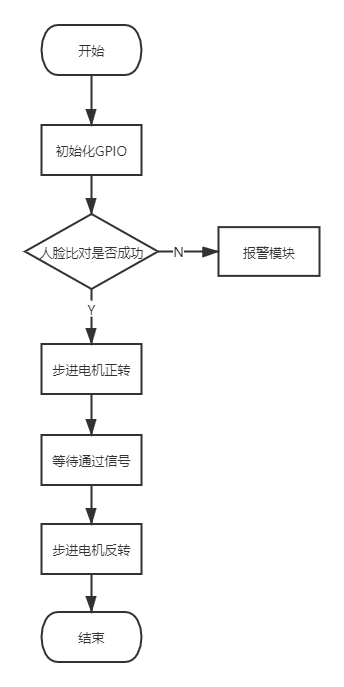
系统功能描述
驱动步进电机首先设置主控模块相应的引脚为 OUTPUT 模式。当程序中人脸识别检测通过时，主控模块通过驱动模块带动步进电机正转。正转一定的角度后停止，模拟等待人员通过。一段时间后电机反转回到初始位置。
报警模块设计
本文设计的是一套完整的门禁系统，报警模块必不可少。本文设计的报警模块由蜂鸣器构成，具体操作流程如下：在程序运行时，触发触摸开关后，每当待检测人员匹配不成功或未检测到人脸，蜂鸣器发出鸣叫。
程序流程图
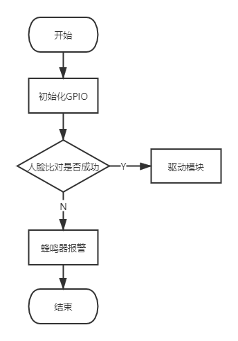
系统功能描述
蜂鸣器首先设置主控模块相应的引脚为 OUTPUT 模式。当程序中人脸识别检测未通过时，主控模块通过报警模块发出警报，检测通过则触发驱动模块。
系统测试
系统简介
基于树莓派的人脸识别门禁系统，采用云平台的方式进行人脸识别，可以很大程度上的提高设备的识别效率，使人脸识别技术的应用更加可行，在微机上利用云平台来搭建人脸识别系统，能够使该技术的应用范围变得更广。同时还具有 Web 客户端可方便操作，实时监控家庭画面，远程控制家庭门禁开关，自带警报功能，查看历史门禁记录以及对家庭成员进行管理，可新增、删除或更新人脸信息，使智能门禁系统成为现实。该系统有功耗低、视频流延迟小和响应快的特点，能够改善传统安防领域的安全性、方便性、直观性等。
测试环境
| 硬件环境 | 应用服务器 | 数据库服务器 | 客户端 |
|---|---|---|---|
| 硬件配置 | CPU：ARM Cortex-A72 CPU 1.5GHz 四核 64-bit Memory：4GB | CPU: Intel(R) Xeon(R) CPU 2394.440 MHZ Memory：2GB | CPU: Intel(R) Core(TM) i7-7500 CPU@2.70GHz 2.90 GHz Memory: 8GB |
| 软件配置 | OS: Raspbian 4.18 Flask 1.1.1 Python 3.7 | OS: Ubuntu 16.04.1 MySQL 5.7.26 | OS: Windows10 1909 Google Chrome 81.0 |
| 网络环境 | 100M LAN | 1M LAN | 100M LAN |
测试结论
系统正确实现了智能门禁的功能，实现了远程监控和操作功能，实现了Web界面。实现了门禁数据管理，人员管理，添加，修改，删除的功能，系统还实现了将权限控制细化到菜单按钮的功能。系统在实现用户管理下的权限管理功能时，存在重大的缺陷，权限控制不严密，权限设计有遗漏[13]。
现有系统实现了如下易用性：查询，添加，删除，修改操作相关提示信息的一致性，可理解性；输入限制的正确性；输入限制提示信息的正确性，可理解性，一致性。
现有系统的可靠性控制不够严密，很多控制是通过页面控制实现的，如果页面控制失效，可以向数据库插入数据，引发错误。现有系统的容错性不高，如果系统出现错误，返回错误类型为找不到页面错误，无法回复到出错前的状态。
设计结果及结论
本文基于树莓派和旷视人脸识别云平台，实现了一个智能门禁系统．在整个场景模拟试验过程中，无异常报错，系统整体呈现出较强的稳定性，通过试验数据可知系统识别率和实时性都达到了设计的预期要求，系统的外接设备在运行过程中响应良好，识别正确率高，识别成功后的电机进行响应的平均时间为 0.5ｓ，消息远程收发功能、信息管理与控制系统的相关功能均可正常执行。
虽然系统整体表现良好，但还存在的一个较大问题就是系统的交互性体验还有待提高，在后期的改善过程中，可以引入深度学习的概念，通过对用户的门禁系统的使用数据进行分析，在已有的基础上进行功能扩展，提高用户的使用体验,与同类型产品相比较，本系统在不影响识别精度的前提下，降低了开发生产成本，表现出较强的稳定性，可扩展性强，本文详细描述了整个系统的构建和实现方式，能够为树莓派开发、云平台应用和智能安防等相关领域的同类型产品研发提供一种参考方案。